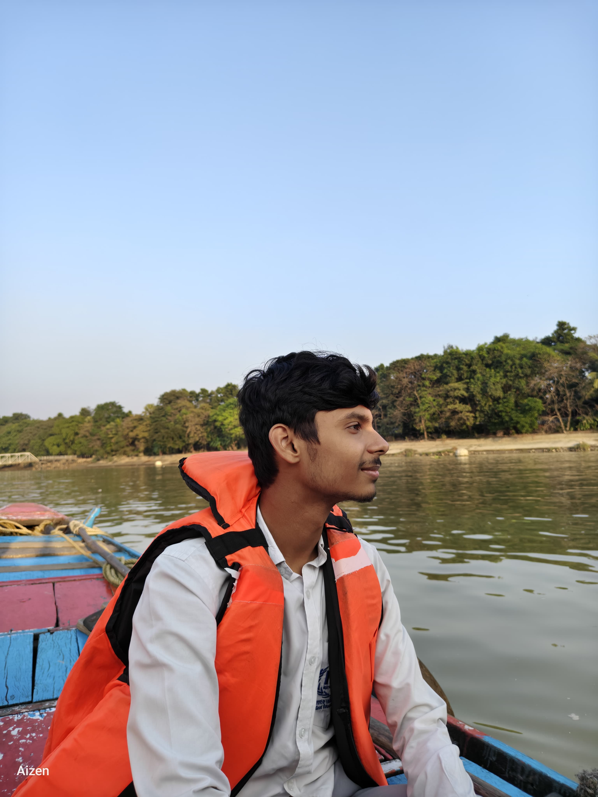
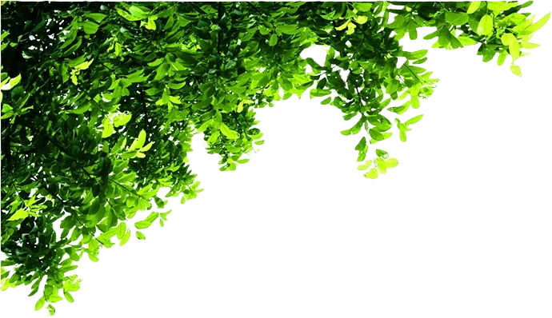

Personal Journal
Journal
Dibyajyotee Ghosh
Journal Entry


This waterfall feels like the embodiment of raw, unrestrained energy — rushing forward, carving its path, never hesitating. There's something both calming and powerful about watching water in motion; it doesn't fight its course, yet it reshapes the land beneath it.
Reflections


Photo Diary


Gratitude
"If you look closely at the things I pour my time into, it’s a beautifully chaotic mix. I like that I don't just fit into one box. One night I'm building local AI models and testing hardware sensors, and the next I'm trying to capture the exact cinematic vibe of a mountain lake or climbing the ranks in Brawl Stars. I'm managing administrative headaches for my dad, looking out for Prisha, Pookie, Evie and still finding time to optimize game engines. Building this journal is like finally putting all those pieces in one room. It’s a digital mirror of the engineer, the son, the brother, and the gamer—silently holding the context of my chaos so I can just breathe and keep building."

MR. SHADOW
Level 31 · ID: 39093973
Grateful for the late nights, the grinding, the victories — and every season that pushed me to level up. A perfect digital sanctuary away from the circuits and textbooks.
Hearts

RAHUL
Goals & Intentions👥 Family & Friends
🏔 Mountains — calm, timeless, and full of peace
🏏 Playing Cricket
🍲 Biriyani
🎂 September 20th
You're someone whose heart is tied to the people and places that give life meaning. The way you find joy in cricket and love in biriyani shows how simple things can hold the deepest happiness.

Adrija Kundu
Goals & Intentions👥 Maa — the safest place, the strongest love
🏡 Bari — where memories live
🍗 Butter Chicken & Butter Naan
💃 Dancing — expressing joy without words
🎯 To stay simple.
Life becomes beautiful when we learn to hold close to what truly matters — love, home, small joys, and the freedom to be ourselves.

Prisha
My Pookie ✨🎨 Pink & Yellow — soft sunshine, sweet energy
🍽 Happily eats everything 😋
🎶 Secret Crush: Stray Kids 🤭
🕷 Superpower: Spider Woman 🕸
🥔🐱 Secretly a potato AND a cat
You are my pookie and my bbg ✨ — playful, warm, a little filmy, a little dreamy… and completely impossible to replace.


Pookie
The Artist Soul🎨 Red & Black — bold, passionate, timeless
🖌 Painting · Writing · Basketball · Guitar · Design
🎧 The Weeknd · Frank Ocean · Jeff Buckley · Drake
💫 Choosing space, growth, and peace
You feel like a canvas painted in contrasts — the fire of red, the mystery of black, the elegance of Paris, and the soul of an artist who turns emotion into art.

Sharmik
The Safe Harbor👥 Friends — the ultimate chosen family
🏡 Home — the ultimate sanctuary
🗣️ Finding joy in good company & deep talks
🍲 Biriyani — pure comfort
You find your sanctuary in the warmth of home and the steady presence of friends. Like the color blue, your energy brings a deep, calming reliability to those lucky enough to share a plate of biriyani and a good conversation with you.

Bnu
The Unfiltered Connection✨ Raw, genuine, and always real
(Click to open gallery)
"Some bonds don't need a filter. They are just a beautiful chaotic collection of moments that speak for themselves."

Goals
To be Simple
The highest form of sophistication
Move Through Life with a Light Heart
Take nothing personally · protect inner peace
Keep Exploring
Waterfalls, mountains, and everything in between